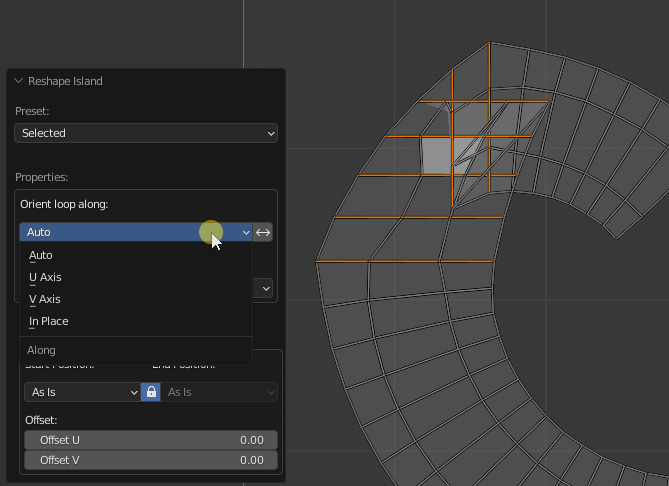
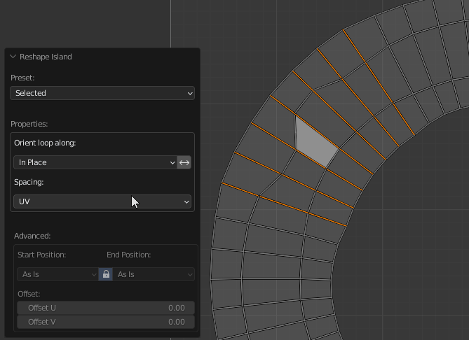
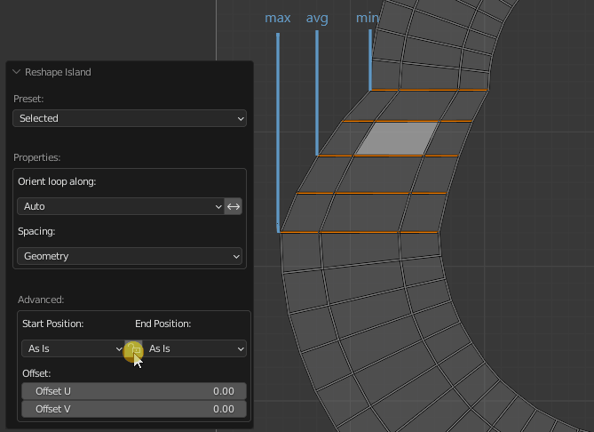
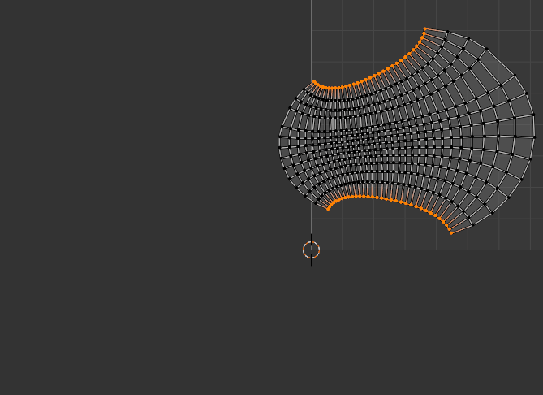

Reshape Island
Changes the island’s shape depending on the preset.
Preset Selected:
- Straighten the selected Edge Loops and relax not selected vertices.
{kind=link}
- Orient loop along - How to orient the selected loops.
- Auto - Automatic finding loop orientation.
- U Axis - Along the U axis.
- V Axis - Along the V axis.
- In Place - The beginning and end of the loop will remain such as before the operator runs.
- Reverse Direction - Change the direction of the loop to the opposite.
- Spacing - How to set the distances between the points of the loop.
- UV - As in the UV Map.
- Geometry - As in the mesh.
- Evenly - Distribute at an equal distance.
Orient Along Sample:
|  |
|---|
| Loops orientation |
{kind=link}
Spacing Sample:
|  |
|---|
| Set spacing |
{kind=link}
Advanced Properties:
-
The properties of the operator for aligning the loops relative to each other.
-
Start Position: - How to set the beginning of the loop.
- As is - Leave in place.
- Max - Set to the maximal position of the loops.
- Averaged - Set to the averaged position of the loops.
- Min - Set to the minimal position of the loops.
- Lock - Lock Start Position and the End Position.
- End Position: - How to set the ending of the loop.
- As is - Leave in place.
- Max - Set to the maximal position of the loops.
- Averaged - Set to the averaged position of the loops.
- Min - Set to the minimal position of the loops.
- Offset - Indicates the offset of each next loop relative to the previous. Sorting begins on the left bottom. The red color indicates that the value is not zero.
Start / End Position Sample:
|  |
|---|
| Set Start / End position |
{kind=link}
Offset Sample:
|  |
|---|
| Offset |
{kind=link}
Preset U/V Direction:
Properties
- Angle - If the slope of the edge is less or equal to this value, then the edge will be selected.
- Spacing - How to set the distances between the points of the loop.
{kind=link}
Please refer to the Advanced Properties to learn more.
How to work Angle value:
{kind=link}
- If angle 01 is less than angle 02 means the edge is aligned along the U axis. If opposite, then the edge is aligned along the V axis.
- If the value of the Angle: operator’s properties are less than angle 01, then the edge will not be selected.
Preset Borders:
Properties
- Corners By: - How to detect corners of the Island.
- Corner - By corner vertices.
- Pinned - By pinned vertices.
- Pinned & Corners - By pinned and corner vertices.
- Length - How to calculate the length for each straightened border segment.
- UV - As a sum of UV edges length.
- Geometry - As a sum of mesh edge length.
- Short - As a distance from the first point to the last point of the edge loop.
- Border Offset - Offset all the vertices using the first point as a pivot. This leads to island scaling.
Corner Sample:
{kind=link}
- A Corner Point - it’s a point that has 2 connected edges.
- Pinned Point - it’s a point that is pinned by Blender’s native Pin operator.
{kind=link}
{kind=link}